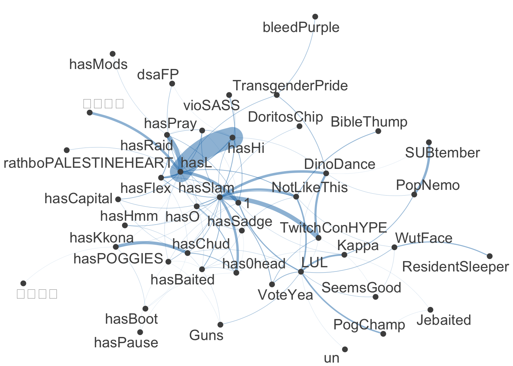

if (!require("pacman")) install.packages("pacman")
pacman::p_load(
here,
magrittr, janitor,
ggpubr,
gt, gtExtras,
countdown,
quanteda, # quanteda text processing
quanteda.textplots, quanteda.textstats, quanteda.textmodels,
udpipe, spacyr, # POS tagging
easystats, tidyverse
)🔨 Advanced Methods
Tutorial - Session 08
Background
Preparation
# Import base data
chats <- qs::qread(here("local_data/chat-debates_full.qs"))$correct
transcripts <- qs::qread(here("local_data/transcripts-debates_full.qs"))$correct
dict_chat_emotes <- readRDS(here("local_data/dictionary_chat_emotes.RDS"))
# Import corpora
transcripts_udpipe <- qs::qread(here("local_data/transcripts-corpus_udpipe.qs"))
transcripts_spacyr <- qs::qread(here("local_data/transcripts-corpus_spacyr.qs"))
transcripts_pos <- transcripts_udpipeCodechunks aus der Sitzung
Erstellung der Datengrundlage
# Create corpus
corp_transcripts <- transcripts %>%
quanteda::corpus(
docid_field = "id_sequence",
text_field = "dialogue"
)
# Tokenize corpus
toks_transcripts <- corp_transcripts %>%
quanteda::tokens(
remove_punct = TRUE,
remove_symbols = TRUE,
remove_numbers = TRUE,
remove_url = TRUE,
split_hyphens = FALSE,
split_tags = FALSE
) %>%
quanteda::tokens_remove(
pattern = quanteda::stopwords("en")
)
# Add n_grams
toks_transcripts_ngrams <- toks_transcripts %>%
quanteda::tokens_ngrams(n = 1:3)
# Convert to DFM
dfm_transcripts <- toks_transcripts_ngrams %>%
quanteda::dfm()# Create corpus
corp_chats <- chats %>%
quanteda::corpus(docid_field = "message_id", text_field = "message_content")
# Tokenize corpus
toks_chats <- corp_chats %>% quanteda::tokens()
# Convert to DFM
dfm_chats <- toks_chats %>% quanteda::dfm()Ngrams: Sequenzen von N aufeinanderfolgenden Token
toks_transcripts %>%
quanteda::tokens_ngrams(n = 2) %>%
quanteda::dfm() %>%
quanteda.textstats::textstat_frequency() %>%
head(25) feature frequency rank docfreq group
1 know_know 1337 1 49 all
2 t-mobile_t-mobile 864 2 6 all
3 donald_trump 755 3 461 all
4 going_say 666 4 30 all
5 say_going 661 5 35 all
6 saying_bad 558 6 4 all
7 bad_saying 553 7 3 all
8 kamala_harris 494 8 333 all
9 vice_president 429 9 376 all
10 curious_curious 373 10 7 all
11 sekunden_pause 354 11 266 all
12 right_now 269 12 234 all
13 united_states 268 13 211 all
14 feel_like 230 14 164 all
15 oh_oh 229 15 10 all
16 like_know 208 16 133 all
17 president_trump 203 17 178 all
18 like_like 191 18 144 all
19 president_harris 186 19 179 all
20 lot_people 181 20 138 all
21 know_like 168 21 109 all
22 american_people 163 22 118 all
23 oh_god 154 23 139 all
24 just_like 153 24 129 all
25 former_president 141 25 115 allKollokationen: Identifikation von bedeutungsvollen Wortkombinationen
toks_transcripts %>%
quanteda.textstats::textstat_collocations(
size = 2,
min_count = 5
) %>%
head(25) collocation count count_nested length lambda z
1 know know 1337 0 2 3.890787 98.31370
2 saying bad 558 0 2 6.503305 81.19215
3 bad saying 553 0 2 6.481795 80.98625
4 going say 666 0 2 4.555737 80.92246
5 say going 661 0 2 4.562963 80.82524
6 donald trump 755 0 2 7.422847 75.19267
7 kamala harris 494 0 2 7.873933 68.88003
8 vice president 429 0 2 7.258104 56.72753
9 oh oh 229 0 2 4.679549 54.95066
10 right now 269 0 2 3.996328 53.27167
11 senator vance 129 0 2 6.583164 49.48173
12 little bit 132 0 2 8.268099 45.80914
13 president harris 186 0 2 4.027681 45.69845
14 oh god 154 0 2 6.175930 44.94423
15 years ago 102 0 2 6.436807 43.06424
16 tim walz 90 0 2 7.588398 43.05596
17 president trump 203 0 2 3.468589 42.70406
18 four years 100 0 2 6.381600 42.53221
19 health care 136 0 2 7.400206 41.83123
20 white house 85 0 2 8.071701 41.52827
21 donald trump's 132 0 2 6.408658 41.05938
22 former president 141 0 2 5.790480 41.04486
23 curious curious 373 0 2 11.836611 40.77202
24 governor walz 77 0 2 6.512020 39.65499
25 two minutes 84 0 2 6.490910 39.39074Arbeiten mit quanteda: corpus
# Create corpus
corp_transcripts <- transcripts %>%
quanteda::corpus(
docid_field = "id_sequence",
text_field = "dialogue"
)
# Output
corp_transcriptsCorpus consisting of 5,861 documents and 10 docvars.
p1_s0001 :
"Tonight, the high-stakes showdown here in Philadelphia betwe..."
p1_s0002 :
"A historic race for president upended just weeks ago, Presid..."
p1_s0003 :
"The candidates separated by the smallest of margins, essenti..."
p1_s0004 :
"This is an ABC News special. The most consequential moment o..."
p1_s0005 :
"Together, we'll chart a... (..)"
p1_s0006 :
"Donald Trump."
[ reached max_ndoc ... 5,855 more documents ]Keywords-in-Context (KWIC)
Unmittelbarer Wortkontext ohne statistische Gewichtung
toks_transcripts %>%
kwic("know", window = 3) %>%
head(10)Keyword-in-context with 10 matches.
[p1_s0018, 29] opportunity economy thing | know | shortage homes housing
[p1_s0018, 39] far many people | know | young families need
[p1_s0020, 25] billions billions dollars | know | China fact never
[p1_s0022, 44] done intend build | know | aspirations hopes American
[p1_s0024, 2] nothing | know | knows better anyone
[p1_s0025, 1] | know | everybody else Vice
[p1_s0026, 64] stand issues invite | know | Donald Trump actually
[p1_s0028, 38] goods coming country | know | many economists say
[p1_s0029, 24] billions dollars countries | know | like gone immediately
[p1_s0031, 90] Thank President Xi | know | Xi responsible lacking Einsatz zur Qualitätskontrolle
toks_transcripts %>%
kwic(
phrase("know know"),
window = 3) %>%
tibble() %>%
select(-pattern) %>%
slice(35:45) %>%
gt() %>%
gtExtras::gt_theme_538() %>%
gt::tab_options(
table.width = gt::pct(100),
table.font.size = "10px"
)| docname | from | to | pre | keyword | post |
|---|---|---|---|---|---|
| vp2_s0723 | 94 | 95 | kiss just kiss | know know | just kiss kiss |
| vp2_s0732 | 119 | 120 | default press even | know know | difference campaign strategy |
| vp3_s0151 | 32 | 33 | cop able assess | know know | J.D Vance lying |
| vp3_s0332 | 3 | 4 | really mean | know know | many people tune |
| vp3_s0332 | 116 | 117 | generous Sekunden Pause | know know | type like know |
| vp3_s0332 | 120 | 121 | know type like | know know | type like know |
| vp3_s0332 | 124 | 125 | know type like | know know | know know know |
| vp3_s0332 | 125 | 126 | type like know | know know | know know know |
| vp3_s0332 | 126 | 127 | like know know | know know | know know know |
| vp3_s0332 | 127 | 128 | know know know | know know | know know know |
| vp3_s0332 | 128 | 129 | know know know | know know | know know know |
Ngrams als Features definieren
# Definition von Features
custom_ngrams <- c("donald trump", "joe biden", "kamala harris")
# Anwendung auf DFM
dfm_with_custom_ngrams <- toks_transcripts %>%
tokens_compound(pattern = phrase(custom_ngrams)) %>%
dfm() %>%
dfm_trim(min_docfreq = 0.005, max_docfreq = 0.99, docfreq_type = "prop")
# Überprüfung
dfm_with_custom_ngrams %>%
convert(to = "data.frame") %>%
select(doc_id, starts_with("donald")) %>%
head() doc_id donald_trump donald
1 p1_s0001 1 0
2 p1_s0002 1 0
3 p1_s0003 0 0
4 p1_s0004 0 0
5 p1_s0005 0 0
6 p1_s0006 1 0Semantische Netzwerke: Visualisierung von Tokenbeziehungen
# Lookup emotes in DFM of chats
dfm_emotes <- dfm_chats %>%
quanteda::dfm_lookup(
dictionary = dict_chat_emotes)
# Output frequency of emojis
top50_emotes <- dfm_emotes %>%
topfeatures(50) %>%
names()
# Visualize
dfm_emotes %>%
fcm() %>%
fcm_select(pattern = top50_emotes) %>%
textplot_network()
POS-Tagging & Dependency Parsing
udmodel <- udpipe::udpipe_download_model(language = "english")
transcripts_pos <- transcripts %>%
rename(doc_id = id_sequence, text = dialogue) %>%
udpipe::udpipe(udmodel)transcripts_pos %>%
select(doc_id, sentence_id, token_id, token, head_token_id, lemma, upos, xpos) %>%
head(n = 7) %>%
gt() %>% gtExtras::gt_theme_538() %>%
gt::tab_options(table.width = gt::pct(100), table.font.size = "12px")| doc_id | sentence_id | token_id | token | head_token_id | lemma | upos | xpos |
|---|---|---|---|---|---|---|---|
| p1_s0001 | 1 | 1 | Tonight | 0 | tonight | NOUN | NN |
| p1_s0001 | 1 | 2 | , | 1 | , | PUNCT | , |
| p1_s0001 | 1 | 3 | the | 7 | the | DET | DT |
| p1_s0001 | 1 | 4 | high | 6 | high | ADJ | JJ |
| p1_s0001 | 1 | 5 | - | 6 | - | PUNCT | HYPH |
| p1_s0001 | 1 | 6 | stakes | 7 | stake | NOUN | NNS |
| p1_s0001 | 1 | 7 | showdown | 1 | showdown | NOUN | NN |
Mit welchen Wörtern wird Trump beschrieben?
transcripts_pos %>%
filter(
upos == "NOUN" &
lemma == "trump") %>%
inner_join(
transcripts_pos,
by = c(
"doc_id",
"sentence_id"),
relationship =
"many-to-many") %>%
filter(
upos.y == "ADJ" &
head_token_id.y == token_id.x) %>%
rename(
token_id = token_id.y,
token = token.y) %>%
select(
doc_id, sentence_id,
token_id, token) %>%
sjmisc::frq(token, sort.frq = "desc") token <character>
# total N=161 valid N=161 mean=3.72 sd=4.67
Value | N | Raw % | Valid % | Cum. %
---------------------------------------------
donald | 132 | 81.99 | 81.99 | 81.99
Donald | 4 | 2.48 | 2.48 | 84.47
um | 3 | 1.86 | 1.86 | 86.34
former | 2 | 1.24 | 1.24 | 87.58
narcissistic | 2 | 1.24 | 1.24 | 88.82
bad | 1 | 0.62 | 0.62 | 89.44
good | 1 | 0.62 | 0.62 | 90.06
great | 1 | 0.62 | 0.62 | 90.68
iran | 1 | 0.62 | 0.62 | 91.30
laura | 1 | 0.62 | 0.62 | 91.93
much | 1 | 0.62 | 0.62 | 92.55
okay | 1 | 0.62 | 0.62 | 93.17
other | 1 | 0.62 | 0.62 | 93.79
past | 1 | 0.62 | 0.62 | 94.41
Said | 1 | 0.62 | 0.62 | 95.03
selfish | 1 | 0.62 | 0.62 | 95.65
social | 1 | 0.62 | 0.62 | 96.27
tighter | 1 | 0.62 | 0.62 | 96.89
total | 1 | 0.62 | 0.62 | 97.52
unfit | 1 | 0.62 | 0.62 | 98.14
unseat | 1 | 0.62 | 0.62 | 98.76
weaker | 1 | 0.62 | 0.62 | 99.38
weird | 1 | 0.62 | 0.62 | 100.00
<NA> | 0 | 0.00 | <NA> | <NA>transcripts_spacyr %>%
filter(
pos == "NOUN" &
lemma == "trump") %>%
inner_join(
transcripts_spacyr,
by = c(
"doc_id",
"sentence_id"),
relationship =
"many-to-many") %>%
filter(
pos.y == "ADJ" &
head_token_id.y == token_id.x) %>%
rename(
token_id = token_id.y,
token = token.y) %>%
select(
doc_id, sentence_id,
token_id, token) %>%
sjmisc::frq(token, sort.frq = "desc") token <character>
# total N=10 valid N=10 mean=5.40 sd=2.88
Value | N | Raw % | Valid % | Cum. %
-------------------------------------------
unfit | 2 | 20 | 20 | 20
bad | 1 | 10 | 10 | 30
donald | 1 | 10 | 10 | 40
fucking | 1 | 10 | 10 | 50
narcissistic | 1 | 10 | 10 | 60
other | 1 | 10 | 10 | 70
same | 1 | 10 | 10 | 80
tighter | 1 | 10 | 10 | 90
total | 1 | 10 | 10 | 100
<NA> | 0 | 0 | <NA> | <NA>